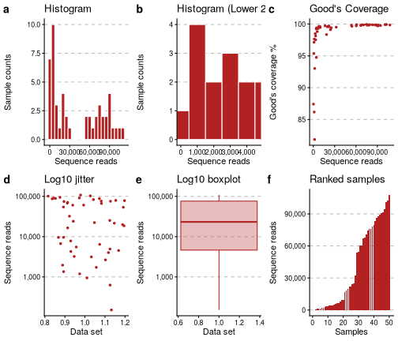
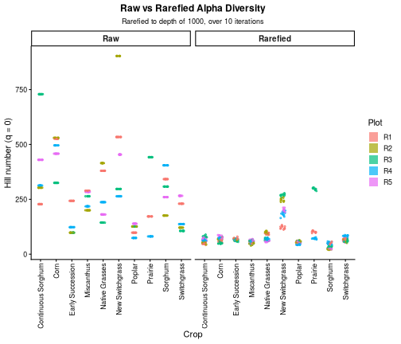
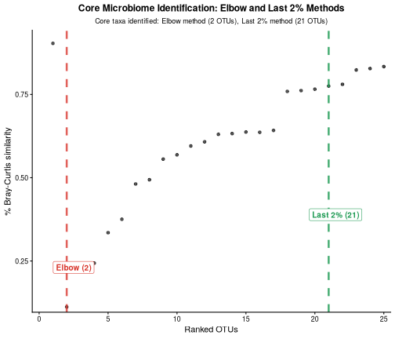
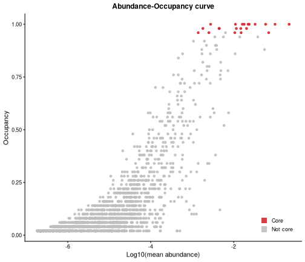
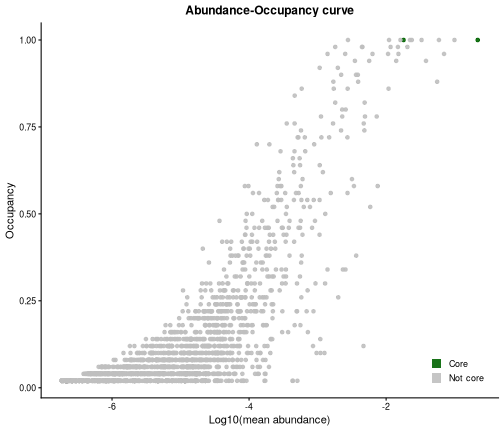
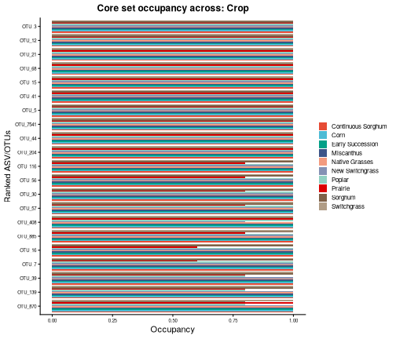
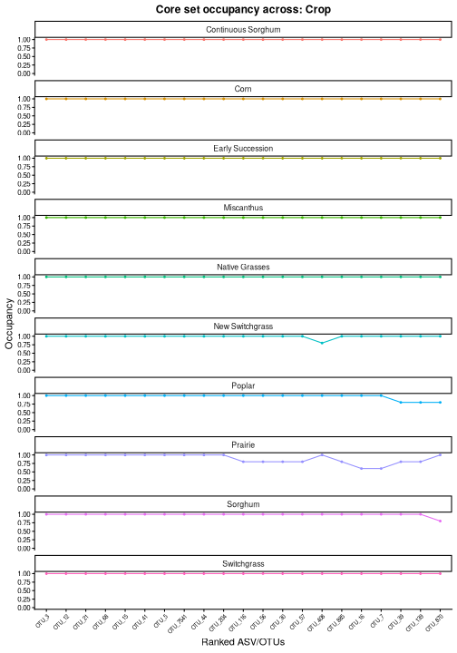
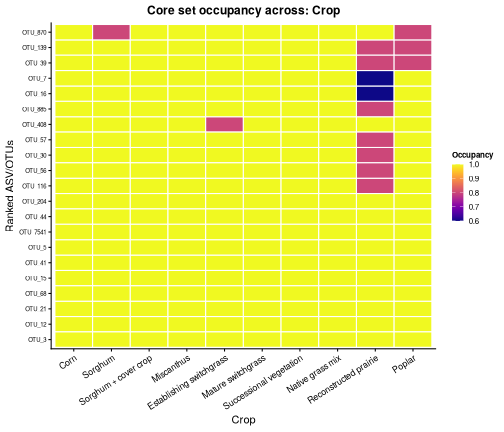

Introduction to BRCore
By Bolívar Aponte Rolón and Gian Maria Niccolo’ Benucci
Last modified: 21 April, 2026
Source:vignettes/BRCore-vignette.Rmd
BRCore-vignette.RmdLoad R libraries
invisible(
lapply(
c("BRCore", "phyloseq", "tidyverse", "viridis"),
library,
character.only = TRUE
)
)
#> ── Attaching core tidyverse packages ─────────── tidyverse 2.0.0 ──
#> ✔ dplyr 1.1.4 ✔ readr 2.1.5
#> ✔ forcats 1.0.0 ✔ stringr 1.6.0
#> ✔ ggplot2 4.0.1 ✔ tibble 3.3.0
#> ✔ lubridate 1.9.4 ✔ tidyr 1.3.1
#> ✔ purrr 1.2.0
#> ── Conflicts ───────────────────────────── tidyverse_conflicts() ──
#> ✖ readr::edition_get() masks testthat::edition_get()
#> ✖ dplyr::filter() masks BRCore::filter(), stats::filter()
#> ✖ purrr::is_null() masks testthat::is_null()
#> ✖ dplyr::lag() masks stats::lag()
#> ✖ readr::local_edition() masks testthat::local_edition()
#> ✖ dplyr::matches() masks tidyr::matches(), testthat::matches()
#> ℹ Use the
#> Loading required package: viridisLiteDatasets included
The BRCore R package comes with a few datasets. Three
16S datasets: switchgrass, mimulus, and
bean, from Shade and Stopnisek (2019); a 16S dataset, called
bcse, from leaves of ten different cropping systems in the
Bioenergy Crop Research Experiment from Haan et
al. (2023). Here we are
going to use bcse since it is not rarefied in contrast of
the other three.
data("bcse", package = "BRCore")
str(bcse)
#> Formal class 'phyloseq' [package "phyloseq"] with 5 slots
#> ..@ otu_table:Formal class 'otu_table' [package "phyloseq"] with 2 slots
#> .. .. ..@ .Data : int [1:2861, 1:50] 0 1 0 0 27777 0 7 2 119 0 ...
#> .. .. .. ..- attr(*, "dimnames")=List of 2
#> .. .. .. .. ..$ : chr [1:2861] "OTU_427" "OTU_11" "OTU_253" "OTU_148" ...
#> .. .. .. .. ..$ : chr [1:50] "bcse50" "bcse69" "bcse73" "bcse191" ...
#> .. .. ..@ taxa_are_rows: logi TRUE
#> .. .. ..$ dim : int [1:2] 2861 50
#> .. .. ..$ dimnames:List of 2
#> .. .. .. ..$ : chr [1:2861] "OTU_427" "OTU_11" "OTU_253" "OTU_148" ...
#> .. .. .. ..$ : chr [1:50] "bcse50" "bcse69" "bcse73" "bcse191" ...
#> ..@ tax_table:Formal class 'taxonomyTable' [package "phyloseq"] with 1 slot
#> .. .. ..@ .Data: chr [1:2861, 1:10] "OTU_427" "OTU_11" "OTU_253" "OTU_148" ...
#> .. .. .. ..- attr(*, "dimnames")=List of 2
#> .. .. .. .. ..$ : chr [1:2861] "OTU_427" "OTU_11" "OTU_253" "OTU_148" ...
#> .. .. .. .. ..$ : chr [1:10] "OTU_ID" "Kingdom" "Phylum" "Class" ...
#> .. .. ..$ dim : int [1:2] 2861 10
#> .. .. ..$ dimnames:List of 2
#> .. .. .. ..$ : chr [1:2861] "OTU_427" "OTU_11" "OTU_253" "OTU_148" ...
#> .. .. .. ..$ : chr [1:10] "OTU_ID" "Kingdom" "Phylum" "Class" ...
#> ..@ sam_data :'data.frame': 50 obs. of 3 variables:
#> Formal class 'sample_data' [package "phyloseq"] with 4 slots
#> .. .. ..@ .Data :List of 3
#> .. .. .. ..$ : chr [1:50] "Leaf" "Leaf" "Leaf" "Leaf" ...
#> .. .. .. ..$ : chr [1:50] "Corn" "Sorghum" "Switchgrass" "Miscanthus" ...
#> .. .. .. ..$ : chr [1:50] "R2" "R4" "R5" "R5" ...
#> .. .. ..@ names : chr [1:3] "Niche" "Crop" "Plot"
#> .. .. ..@ row.names: chr [1:50] "bcse50" "bcse69" "bcse73" "bcse191" ...
#> .. .. ..@ .S3Class : chr "data.frame"
#> ..@ phy_tree : NULL
#> ..@ refseq :Formal class 'DNAStringSet' [package "Biostrings"] with 5 slots
#> .. .. ..@ pool :Formal class 'SharedRaw_Pool' [package "XVector"] with 2 slots
#> .. .. .. .. ..@ xp_list :List of 1
#> .. .. .. .. .. ..$ :<externalptr>
#> .. .. .. .. ..@ .link_to_cached_object_list:List of 1
#> .. .. .. .. .. ..$ :<environment: 0x57a8d9a9d860>
#> .. .. ..@ ranges :Formal class 'GroupedIRanges' [package "XVector"] with 7 slots
#> .. .. .. .. ..@ group : int [1:2861] 1 1 1 1 1 1 1 1 1 1 ...
#> .. .. .. .. ..@ start : int [1:2861] 106501 2501 63001 36751 501 19251 14251 37751 3751 8501 ...
#> .. .. .. .. ..@ width : int [1:2861] 250 250 250 250 250 250 250 250 250 250 ...
#> .. .. .. .. ..@ NAMES : chr [1:2861] "OTU_427" "OTU_11" "OTU_253" "OTU_148" ...
#> .. .. .. .. ..@ elementType : chr "ANY"
#> .. .. .. .. ..@ elementMetadata: NULL
#> .. .. .. .. ..@ metadata : list()
#> .. .. ..@ elementType : chr "DNAString"
#> .. .. ..@ elementMetadata: NULL
#> .. .. ..@ metadata : list()Data Exploration and Parameter Selection for Core Identification
Rarefaction metrics and visualization
We are not going to talk about the importance of rarefaction as it is not the goal of this vignette, but if you are interested you should read Schloss (2024a), Schloss (2024b), Hong et al. (2022), and Weiss et al. (2017) as a start.
In BRCore, to identified the ideal rarefaction cutoff we
can plot a simple series of visuals to guide us in the decision. As we
all know, we can, more or less, estimate how well a DNA sample will
sequence, but there are always some samples that fail to sequence (or
sequence badly) and some others that will sequence “too well” for
reasons that are outside our control or by chance.
In the end we will need to decide how many samples we are accepting to discard and how much diversity we want to retain in our data. To do that we can use some help by plotting some diagnostics plots as shown below.
bcse_metrics <- add_rarefaction_metrics(data = bcse)
bcse_metrics
#> phyloseq-class experiment-level object
#> otu_table() OTU Table: [ 2861 taxa and 50 samples ]
#> sample_data() Sample Data: [ 50 samples by 7 sample variables ]
#> tax_table() Taxonomy Table: [ 2861 taxa by 10 taxonomic ranks ]
#> refseq() DNAStringSet: [ 2861 reference sequences ]rarefaction_plot <- plot_rarefaction_metrics(bcse_metrics)
#> ℹ Processing 50 samples
#>
ℹ Generating rarefaction diagnostic plots
✔ Rarefaction diagnostic plots generated successfully
#> ℹ Generating rarefaction diagnostic plots
✔ Generating rarefaction diagnostic plots [1.1s]
print(rarefaction_plot)
Figure 1: Rarefaction metrics. a-b, histograms of samples. c, Good’s coverage per total number of sequences in a sample. d-e, log10 of sequences in a sample. f, samples ranked by sequence reads in a sample.
Note: The Good’s coverage” is a statistics used in ecology that estimates the proportion of species in a community that are represented in a sample, based on the number of species encountered and the total number of individuals sampled. Essentially, it quantifies how well a sample represents the overall diversity of a population or ecosystem. Good’s coverage is calculated as , where is the number of unique ASV/OTUs (i.e. species) found only once, and is the total number of sequence reads (i.e. individuals); a high percentage (e.g., >95%) means most reads are from common taxa, suggesting sufficient sampling, while low coverage indicates many rare, potentially missed, taxa.
Rarefy the data and explore variance propagation
Originally developed by Sanders (1968) rarefaction has been adopted widely in ecology and microbiome research. It consists on randomly re sampling, multiple times, the same number of species (ASV/OTUs) across all samples, to calculate the expected number of species that would be found if all the samples were all the same. It basically prevents samples with more individuals (e.g., more sequencing reads) from appearing more diverse simply because they were sampled more heavily.
Because rarefaction is a random process it add noise to the data, each re sampling is slightly different from others due to chance. This can be problematic, especially when a very low rarefaction cutoff is selected, when for example we want to compare 2 treatments. This is due to the fact that the lower the rarefaction cutoff the more chance you have that rarefaction iterations will differ one another as also showed by Cameron et al. (2021).
We developed functions that can perform and store all the rarefaction iterations so to evaluate (and visualize) the generated noise in the process as show below
bcse_rarefied_list <-
multi_rarefy(
physeq_obj = bcse,
depth_level = 1000,
num_iter = 10,
.as_array = FALSE,
set_seed = 7642
)
#>
#> ── Multiple Rarefaction ───────────────────────────────────────────
#>
#> ── Input Validation ──
#>
#> ✔ Input phyloseq object is valid!
#> ℹ Seed: 7642
#> ℹ Input (matrix/df dim): 47 samples x 2861 taxa
#> ℹ Rarefaction depth: 1000
#> ℹ Iterations: 10
#> ℹ taxa_are_rows: TRUE
#> ℹ OTU matrix/df rownames head: bcse50, bcse69, bcse73, bcse191, bcse82, bcse102
#> ℹ OTU matrix/df colnames head: OTU_427, OTU_11, OTU_253, OTU_148, OTU_3, OTU_78
#> ℹ Row sums summary: Min=1193, Max=107643, Median=25209
#>
#> ── Rarefaction Results ──
#>
#> ── Sample Removal
#> ! 3 samples removed (depth < 1000)
#> ! Samples removed: "bcse108, bcse105, bcse110"
#>
#> ── Taxa Removal
#> ℹ Original taxa input: 2861
#> ! Max: 1822 taxa removed (zero abundance) in viable samples (depth_level >= 1000).
#> ! When using `.as_array = FALSE`, taxa removed may differ across iterations.
#>
#> ── Data Sparsity
#> ℹ Returning list of data frames for each iteration.
#> • Rarefied matrix (across 10 iterations):
#> • Min: 44988 zeros (92.13% sparsity) out of 48833 entries
#> • Max: 47965 zeros (92.52% sparsity) out of 51841 entries
#> • Avg: 46579.7 zeros (92.36% sparsity) out of 50431 entries
#>
#> ── Final Data Dimensions
#> ✔ Output: 10 iterations with 50 unique samples
#> • Samples per iteration:
#> • Min: 47
#> • Max: 47
#> • Non-zero taxa per iteration:
#> • Min: 1039
#> • Max: 1103
#> • Avg: 1073Let’s explore the results.
class(bcse_rarefied_list)
#> [1] "list"
str(bcse_rarefied_list[[1]], list.len = 10) # Dimensions of iteration #1
#> 'data.frame': 47 obs. of 1046 variables:
#> $ OTU_11 : int 0 0 0 0 0 0 0 0 0 0 ...
#> $ OTU_253 : int 0 0 0 0 0 0 0 0 0 0 ...
#> $ OTU_148 : int 0 1 0 11 2 0 0 0 0 78 ...
#> $ OTU_3 : int 261 86 651 272 249 114 192 73 96 320 ...
#> $ OTU_78 : int 0 0 0 0 0 0 0 0 0 0 ...
#> $ OTU_58 : int 0 0 0 0 0 0 0 0 0 0 ...
#> $ OTU_152 : int 0 0 0 0 0 0 0 0 0 0 ...
#> $ OTU_16 : int 2 0 0 1 1 0 0 1 0 0 ...
#> $ OTU_34 : int 0 0 0 0 2 0 0 0 0 0 ...
#> $ OTU_18 : int 0 0 0 87 1 0 0 265 0 0 ...
#> [list output truncated]And plot the variance (the noise we talked above) across the 10
iterations of rarefaction. We can use the
plot_variance_propagation() function to visualize this
variance in Alpha diversity across samples and iterations and compare
Raw (non-rarefied) vs. Rarefied data.
rarefaction_variance_plot <- plot_variance_propagation(
physeq_obj = bcse,
rarefied = bcse_rarefied_list,
q = 0,
group_var = "Crop",
group_color = "Plot"
)
#> ✔ Input phyloseq object is valid!
#>
#> ── Rarefaction Variance Propagation Visualization ─────────────────
#> ℹ Hill number order selected, q= 0
#> ℹ Number of rarefaction iterations, n_iter= 10
#> ℹ Comparison plot generated!
print(rarefaction_variance_plot)
Figure 2: Alpha diversity variance propagation (variance between rarefaction iteration) across 10 iterations of rarefaction. Points represent samples. The x-axis represent the grouping variable (Crop). The y-axis represent the alpha diversity metric (q = 0, i.e. richness) calculated on the samples. The color of the points represent the ‘Plot’ variable, which is a nested variable within ‘Crop’.
Review the rarefaction and variance plots to determine the ideal
sampling depth. You are looking for a “sweet spot” that maintains high
diversity and sample sizes while keeping variance across iterations low.
Pay extra attention when rarefaction cutoff is quite low, as show by
Cameron et al. (2021). Note this depth, as
it will serve as the cutoff for the identify_core() step in
your pipeline.
OPTIONAL: Recreate a phyloseq object with rarefied
otu_table()
The identify_core() function, handles the rarefaction
iterations internally, you do not need to worry about rarefaction. The
results from add_rarefaction_metrics(),
plot_rarefaction_metrics(), and multi_rarefy()
are meant to explore the data and inform the chosen parameters for
identify_core(). You will specify how many rarefaction
iterations you decided to run within the function.
If you have a phyloseq object with a rarefied
otu_table() or if you want to use one specific rarefaction
iteration generated by multi_rarefy() you also have these
options. The choice is up to you and depends on your preferences and the
specific goals of your analysis. The update_otu_table()
function allows for replacing the otu_table() with the
rarefied table you prefer.
bcse_updated_rare <- update_otu_table(
physeq_obj = bcse,
rarefied_otus = bcse_rarefied_list,
iteration = 1 # Speficify which iteration to use for the updated OTU table
)
#> ℹ Extracting iteration 1 from list of 10 iterations.
#> ! Phyloseq object and rarefied otu_table sample names are NOT identical. Check samples removed by rarefaction below.
#> ! 3 samples removed due to rarefaction: "bcse108, bcse105, bcse110"
#> ℹ Building phyloseq object with 47 samples and 1046 taxa
#> ✔ Update complete!Core analysis
Identify the core ASV/OTUs set
We can now identify how many core ASV/OTUs are present in the
dataset. One important difference that separates
identify_core() form other methods of identification of
core taxa is that you can specify a variable (in the case of the
bcse dataset is Crop) so that OTUs can be core
for a level of the variable but possibly not for others. This comes form
the idea that core microbiome can be transient in space and time as show
by Shade and Stopnisek (2019).
We continue with the bcse phyloseq object throughout
the vignette.
bcse_rare_core <- identify_core(
physeq_obj = bcse,
priority_var = "Crop",
increase_value = 0.02,
abundance_weight = 0,
depth_level = 1000,
num_iter = 10,
seed = 2134
)
#> Seed used: 2134
#> ✔ Input phyloseq object is valid!
#> ! The otu_table() is not rarefied!
#> Using depth_level=1000 for rarefaction and normalization in Bray-Curtis calculations.
#> Adjust depth_level according to your objectives.
#> ✔ Core prioritizing variable: Crop
#> ℹ Ranked by Index only
#> ℹ Ranking OTUs based on BC dissimilarity, starting at 2026-04-21 09:46:35.360262
#> ✔ Elbow method identified 2 core OTUs
#> ✔ % increase method identified 21 core OTUs
#> ✔ Analysis complete!How the is the core identified?
As shown by Shade and Stopnisek (2019), an interesting way explore the abundance and occupancy inclusion thresholds used to define the core microbiome is to evaluate how well the resulting core membership captures the overarching patterns of beta diversity found in the complete dataset. This approach treats the core microbiome as a representative subset that should preserve the main ecological relationships and sample-to-sample differences observed when using all taxa. By measuring how closely the beta diversity patterns calculated from core taxa alone match those from the full dataset, researchers can objectively assess whether their chosen thresholds produce a meaningful and informative core that maintains the essential structural information of the microbial community while reducing complexity.
To identify the optimal point where increasing the core inclusion threshold provides diminishing returns in explanatory value, we offer two automated methods.
The first is a more stringent
elbowapproach that finds the bend in the abundance-occupancy curve where adding more taxa yields progressively smaller improvements. This method calculates the first-order difference (numerical differentiation) by assigning a score to each potential cutoff point, splitting the curve into two parts, and finding the point that maximizes the difference in average rates of change between these parts.The second method uses a final percent
increasethreshold in beta-diversity (recommend 2% or more), which continues adding taxa until improvements fall below this percentage.
Both methods measure improvement using Bray-Curtis similarity through the equation , where represents the contribution of ranked taxa to total similarity, is the Bray-Curtis similarity using only core taxa, and uses the complete dataset.
The cumulative explanatory value of adding each next-ranked taxon can
be plotted using the plot_identified_core() function, with
the vertical lines indicating the elbow and 2% threshold cutoff methods.
These approaches eliminate the need for subjective threshold setting by
automatically identifying natural breakpoints where additional taxa
provide marginal returns in explanatory power.
The output is a list of 13 named items.
str(bcse_rare_core)
#> List of 13
#> $ bray_curtis_ranked : tibble [2,861 × 5] (S3: tbl_df/tbl/data.frame)
#> ..$ rank : Factor w/ 2861 levels "1","10","100",..: 1112 2085 2196 2307 2418 2529 2640 2751 2 113 ...
#> ..$ MeanBC : num [1:2861] 0.0672 0.1433 0.146 0.2007 0.2248 ...
#> ..$ proportionBC : num [1:2861] 0.112 0.239 0.244 0.335 0.375 ...
#> ..$ IncreaseBC : num [1:2861] 2.13 1.02 1.37 1.12 1.28 ...
#> ..$ elbow_slope_diffs: num [1:2861] -0.000186 0.037871 0.026107 0.033231 0.031392 ...
#> $ otu_ranked :'data.frame': 2861 obs. of 8 variables:
#> ..$ otu : chr [1:2861] "OTU_3" "OTU_12" "OTU_21" "OTU_68" ...
#> ..$ otu_occ: num [1:2861] 1 1 1 1 1 1 1 1 1 1 ...
#> ..$ otu_rel: num [1:2861] 0.21728 0.01799 0.03296 0.00278 0.05897 ...
#> ..$ sumF : num [1:2861] 10 10 10 10 10 10 10 10 10 10 ...
#> ..$ sumG : num [1:2861] 10 10 10 10 10 10 10 10 10 10 ...
#> ..$ nS : int [1:2861] 20 20 20 20 20 20 20 20 20 20 ...
#> ..$ Index : num [1:2861] 1 1 1 1 1 1 1 1 1 1 ...
#> ..$ rank : num [1:2861] 1 1 1 1 1 1 1 1 1 1 ...
#> $ abundance_occupancy:'data.frame': 2861 obs. of 3 variables:
#> ..$ otu : chr [1:2861] "OTU_427" "OTU_11" "OTU_253" "OTU_148" ...
#> ..$ otu_occ: num [1:2861] 0.08 0.46 0.04 0.74 1 0.32 0.3 0.06 0.96 0.04 ...
#> ..$ otu_rel: num [1:2861] 2.47e-05 5.55e-04 4.90e-06 4.82e-03 2.17e-01 ...
#> $ priority_var : chr "Crop"
#> $ abundance_weight : num 0
#> $ elbow : int 2
#> $ bc_increase : int 21
#> $ increase_value : num 0.02
#> $ elbow_core : chr [1:2] "OTU_3" "OTU_12"
#> $ increase_core : chr [1:21] "OTU_3" "OTU_12" "OTU_21" "OTU_68" ...
#> $ otu_table : int [1:2861, 1:50] 0 1 0 0 27777 0 7 2 119 0 ...
#> ..- attr(*, "dimnames")=List of 2
#> .. ..$ : chr [1:2861] "OTU_427" "OTU_11" "OTU_253" "OTU_148" ...
#> .. ..$ : chr [1:50] "bcse50" "bcse69" "bcse73" "bcse191" ...
#> $ metadata :'data.frame': 50 obs. of 4 variables:
#> ..$ Niche : chr [1:50] "Leaf" "Leaf" "Leaf" "Leaf" ...
#> ..$ Crop : chr [1:50] "Corn" "Sorghum" "Switchgrass" "Miscanthus" ...
#> ..$ Plot : chr [1:50] "R2" "R4" "R5" "R5" ...
#> ..$ sample_id: chr [1:50] "bcse50" "bcse69" "bcse73" "bcse191" ...
#> $ taxonomy :'data.frame': 2861 obs. of 10 variables:
#> ..$ OTU_ID : chr [1:2861] "OTU_427" "OTU_11" "OTU_253" "OTU_148" ...
#> ..$ Kingdom : chr [1:2861] "Bacteria" "Bacteria" "Bacteria" "Bacteria" ...
#> ..$ Phylum : chr [1:2861] "Myxococcota" "Actinobacteriota" "Proteobacteria" "Proteobacteria" ...
#> ..$ Class : chr [1:2861] "Polyangia" "Actinobacteria" "Alphaproteobacteria" "Gammaproteobacteria" ...
#> ..$ Order : chr [1:2861] "Polyangiales" "Streptomycetales" "Rhizobiales" "Enterobacterales" ...
#> ..$ Family : chr [1:2861] "Polyangiaceae" "Streptomycetaceae" "Rhizobiaceae" "Enterobacteriaceae" ...
#> ..$ Genus : chr [1:2861] "Aetherobacter" "Streptomyces" "Mesorhizobium" NA ...
#> ..$ Species : chr [1:2861] "Uncultured_bacterium_3097" NA "Mesorhizobium_sophorae" NA ...
#> ..$ BestMatch: chr [1:2861] "Uncultured bacterium 3097" "Streptomyces" "Mesorhizobium sophorae" "Enterobacteriaceae" ...
#> ..$ Taxonomy : chr [1:2861] "OTU_427-Uncultured bacterium 3097" "OTU_11-Streptomyces" "OTU_253-Mesorhizobium sophorae" "OTU_148-Enterobacteriaceae" ...
#> - attr(*, "class")= chr [1:2] "identify_core_result" "list"Visualize the abundance-occupancy distribution and the core ASV/OTUs set
The output from identify_core() can be used for plotting
as below:
bcse_identified_core <- plot_identified_core(
bray_curtis_ranked = bcse_rare_core$bray_curtis_ranked,
elbow = bcse_rare_core$elbow,
lastCall = bcse_rare_core$bc_increase,
increase_value = bcse_rare_core$increase_value
)
print(bcse_identified_core)
Figure 3: Percent Bray-Curtis similarity between samples per ranked ASV/OTUs. Number of core ASV/OTUs identified by Elbow and Last 2% increase in Bray-Curtis similarity are shown.
Visualize the abundance-occupancy curve
Abundance-Occupancy distributions can be plotted:
plot_abund_occ_increase <- plot_abundance_occupancy(
core_result = bcse_rare_core,
core_set = "increase"
)
print(plot_abund_occ_increase)
Figure 4: Abundance-occupancy distribution for the ‘bcse’ dataset. The core ASV/OTUs identified by the last 2% increase method are highlighted in red.
And for the elbow method.
plot_abund_occ_elbow <- plot_abundance_occupancy(
core_result = bcse_rare_core,
core_set = "elbow"
)
plot_abund_occ_elbow +
scale_fill_manual(values = c("darkgreen", "grey"))
#> Scale for fill is already present.
#> Adding another scale for fill, which will replace the existing
#> scale.
Figure 5: Abundance-occupancy distribution for the ‘bcse’ dataset. The core ASV/OTUs identified by the elbow method are highlighted in dark green.
Visualize the core set across the variable used for detecting the core
The plot_core_distribution() it can be used to visualize
ASV/OTUs occupancy across the variable specified during the
identification of the core. The function provides three visualization
methods—bar, line, and heatmap—which can be toggled using the plot_type
argument. The optimal choice often depends on the number of levels in
your grouping variable. For instance, bar or line plots are highly
effective for up to five levels, whereas heatmaps are better suited for
more complex datasets. While these are general recommendations, the core
data is fully accessible in bcse_rare_core should you wish
to develop a custom visualization.
plot_core_dist_bar <- plot_core_distribution(
core_result = bcse_rare_core,
core_set = "increase",
group_var = "Crop",
plot_type = "bar"
)
print(plot_core_dist_bar)
Figure 6: Occupancy of core ASV/OTUs across the ‘Crop’ variable. Each bar represents the average occupancy of core ASV/OTUs in samples belonging to each level of the ‘Crop’ variable. A bar plot won’t work here, way too many variable levels.
plot_core_dist_line <- plot_core_distribution(
core_result = bcse_rare_core,
core_set = "increase",
group_var = "Crop",
plot_type = "line"
)
print(plot_core_dist_line)
Figure 7: Occupancy of core ASV/OTUs across the ‘Crop’ variable. Each point represents the average occupancy of core ASV/OTUs in samples belonging to each level of the ‘Crop’ variable. A line plot is better than a bar plot but still not ideal for this many variable levels.
We can reorder the variable levels following logic before plotting.
bcse_rare_core$metadata <- bcse_rare_core$metadata %>%
mutate(
Crop = recode(
Crop,
"Corn" = "Corn",
"Sorghum" = "Sorghum",
"Continuous Sorghum" = "Sorghum + cover crop",
"Miscanthus" = "Miscanthus",
"New Switchgrass" = "Establishing switchgrass",
"Switchgrass" = "Mature switchgrass",
"Early Succession" = "Successional vegetation",
"Native Grasses" = "Native grass mix",
"Prairie" = "Reconstructed prairie",
"Poplar" = "Poplar"
),
Crop = factor(
Crop,
levels = c(
"Corn",
"Sorghum",
"Sorghum + cover crop",
"Miscanthus",
"Establishing switchgrass",
"Mature switchgrass",
"Successional vegetation",
"Native grass mix",
"Reconstructed prairie",
"Poplar"
)
)
)
plot_core_dist_heatmap <- plot_core_distribution(
core_result = bcse_rare_core,
core_set = "increase",
group_var = "Crop",
plot_type = "heatmap"
) +
viridis::scale_fill_viridis(option = "plasma", name = "Occupancy")
print(plot_core_dist_heatmap)
Figure 8: Occupancy of core ASV/OTUs across the ‘Crop’ variable. Each cell represents the average occupancy of core ASV/OTUs in samples belonging to each level of the ‘Crop’ variable. A heatmap is more compact and shows well enough the average occupancy across samples in each variable level.
Fitting Neutral Model
Neutral models in ecology assume that species (ASVs/OTUs) are functionally equivalent and that community patterns arise from random chance rather than deterministic niches or selection. As a specific case of null models (Gotelli and McGill 2006), they act as a baseline: if real-world data significantly differs from the model’s predictions, we can infer that non-random ecological forces are at play.
Drawing on the influential work of Sloan et al. (2006) and Burns et al. (2015), BRCore implements accessible functions to fit and visualize these models. Our goal is to make these powerful ecological tools easy to use without losing the conceptual rigor of the original math.
To get started, we first fit the neutral model:
bcse_rare_core_neutral_fit <- fit_neutral_model(
otu_table = bcse_rare_core$otu_table,
core_set = bcse_rare_core$increase_core,
abundance_occupancy = bcse_rare_core$abundance_occupancy
)
#> Waiting for profiling to be done...
#> ℹ Neutral model fitting:
#> • Average individuals per community (N): 40276.38
#> • Binomial model using rounded N: 40276
#> • Poisson model using N: 40276.38
#> • Maximum likelihood estimation using N: 40276.38, and starting
#> parameters: mu = 0, sigma = 0.1
#> ✔ Model fitting complete!What we get is
str(bcse_rare_core_neutral_fit)
#> List of 2
#> $ goodness_of_fit :'data.frame': 1 obs. of 24 variables:
#> ..$ m : num 0.0205
#> ..$ m.ci : num 0.00186
#> ..$ m.mle : num 0.0205
#> ..$ maxLL : num -2279
#> ..$ binoLL : num -720
#> ..$ poisLL : num -720
#> ..$ Rsqr : num 0.528
#> ..$ Rsqr.bino : num -0.833
#> ..$ Rsqr.pois : num -0.833
#> ..$ RMSE : num 0.109
#> ..$ RMSE.bino : num 0.215
#> ..$ RMSE.pois : num 0.215
#> ..$ AIC : num -4554
#> ..$ BIC : num -4542
#> ..$ AIC.bino : num -1435
#> ..$ BIC.bino : num -1423
#> ..$ AIC.pois : num -1435
#> ..$ BIC.pois : num -1423
#> ..$ N : num 40276
#> ..$ Samples : num 50
#> ..$ Richness : num 2861
#> ..$ Detect : num 2.48e-05
#> ..$ above.pred: num 0.165
#> ..$ below.pred: num 0.035
#> $ model_prediction:'data.frame': 2861 obs. of 14 variables:
#> ..$ otu : chr [1:2861] "OTU_427" "OTU_11" "OTU_253" "OTU_148" ...
#> ..$ otu_occ : num [1:2861] 0.08 0.46 0.04 0.74 1 0.32 0.3 0.06 0.96 0.04 ...
#> ..$ otu_rel : num [1:2861] 2.47e-05 5.55e-04 4.90e-06 4.82e-03 2.17e-01 ...
#> ..$ membership: chr [1:2861] "Not core" "Not core" "Not core" "Not core" ...
#> ..$ p : num [1:2861] 3.48e-06 6.31e-05 2.48e-06 7.98e-03 2.54e-01 ...
#> ..$ freq : num [1:2861] 0.08 0.46 0.04 0.74 1 0.32 0.3 0.06 0.96 0.04 ...
#> ..$ freq.pred : num [1:2861] 0.00951 0.16077 0.0068 1 1 ...
#> ..$ pred.lwr : num [1:2861] 0.000953 0.083916 0.000514 0.928652 0.928652 ...
#> ..$ pred.upr : num [1:2861] 0.088 0.286 0.0835 1 1 ...
#> ..$ bino.pred : num [1:2861] 0.1306 0.9211 0.0952 1 1 ...
#> ..$ bino.lwr : num [1:2861] 0.0632 0.8131 0.0405 0.9287 0.9287 ...
#> ..$ bino.upr : num [1:2861] 0.251 0.969 0.208 1 1 ...
#> ..$ y : chr [1:2861] NA NA NA NA ...
#> ..$ fit_class : chr [1:2861] "As predicted" "Above prediction" "As predicted" "Below prediction" ...
#> - attr(*, "class")= chr [1:2] "fit_neutral_model" "list"Plot the neutral model and the core set
plot_bcse_neutral_fit <- plot_neutral_model(bcse_rare_core_neutral_fit)
print(plot_bcse_neutral_fit)![Figure 9: Neutral model fit illustrates the neutral model of abundance-occupancy distributions for the 'bcse' dataset. The $R^2$ value represents a standard coefficient of determination, calculated as $R^2 = 1 - \frac{SS_{err}}{SS_{total}}$, providing a measure of goodness of fit. The immigration parameter ($m$) estimates the probability that an individual in a local sample originates from the metacommunity rather than from local dispersal. We also observe that the neutral model provides a poor fit; the $R^2$ is notably low, and the majority of taxa (including both core and non-core ASV/OTUs) fall above the model's prediction line. Furthermore, the estimated immigration parameter ($m = 0.63$) suggests that the local community is dominated by strong dispersal and mixing from the metacommunity.](images/fig9_plot_neutral_fit-1.png)
Figure 9: Neutral model fit illustrates the neutral model of abundance-occupancy distributions for the ‘bcse’ dataset. The value represents a standard coefficient of determination, calculated as , providing a measure of goodness of fit. The immigration parameter () estimates the probability that an individual in a local sample originates from the metacommunity rather than from local dispersal. We also observe that the neutral model provides a poor fit; the is notably low, and the majority of taxa (including both core and non-core ASV/OTUs) fall above the model’s prediction line. Furthermore, the estimated immigration parameter () suggests that the local community is dominated by strong dispersal and mixing from the metacommunity.
- Low (): strong dispersal limitation; local history dominates community assembly.
- Moderate (): partial connectivity among sites; both dispersal and local structure influence community composition.
- High (): high dispersal rates and strong mixing from the regional source pool.
Supplemental Information
It is critical to note that the core taxa identified from a single
rarefaction iteration may differ from those identified through multiple
iterations. To illustrate this stochasticity, if we identify the core
using only the first iteration of our bcse phyloseq object
with rarefied otu_table() generated above using
update_otu_table(), we obtain the following results:
bcse_rare_core_iter1 <- identify_core(
physeq_obj = bcse_updated_rare,
priority_var = "Crop",
increase_value = 0.02,
abundance_weight = 0,
seed = 2135
)
#> Seed used: 2135
#> ✔ Input phyloseq object is valid!
#> ℹ otu_table() is rarefied at a depth of: 1000
#> ✔ Core prioritizing variable: Crop
#> ℹ Ranked by Index only
#> ℹ Ranking OTUs based on BC dissimilarity, starting at 2026-04-21 09:56:00.939738
#> ✔ Elbow method identified 3 core OTUs
#> ✔ % increase method identified 25 core OTUs
#> ✔ Analysis complete!Further Customization of identify_core()
While the default settings of identify_core() are
suitable for most analyses, the function provides additional parameters
to balance computational efficiency with ecological nuance. In large
datasets with thousands of ASV/OTUs, ranking every single taxon can be
computationally expensive. The max_otus parameter allows
you to cap the number of taxa processed. Rare taxa (those with very low
abundance) rarely contribute more than 2% to the Bray-Curtis similarity.
Limiting the ranking can significantly speed up your analysis without
losing the core signal. However, if set too low, you may inadvertently
exclude “satellite” taxa—those that are low in abundance but highly
persistent (high occupancy) across your samples.
By default, identify_core() prioritizes occupancy (how
often a taxon appears). However, you may want to account for relative
abundance (how dominant a taxon is). The abundance_weight
argument (numeric, 0 to 1) allows you to blend these two metrics:
abundance_weight = 0 (Default): Ranking is based strictly on occupancy and composite metrics.
abundance_weight = 1: Ranking is based purely on mean relative abundance.
Intermediate Values: A value such as 0.3 creates a hybrid score, weighting occupancy at 70% and abundance at 30%.
Notably, incorporating abundance weighting will likely result in a different core set than an occupancy-only approach.